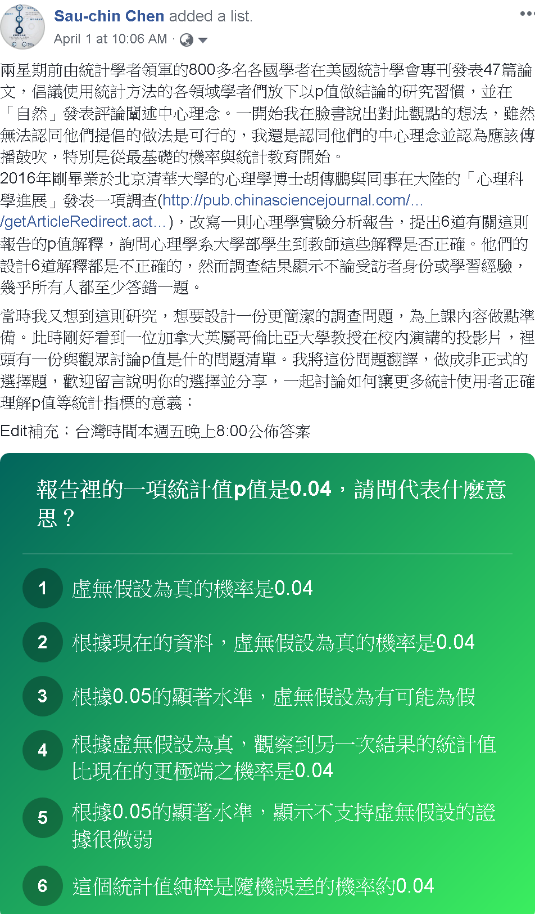
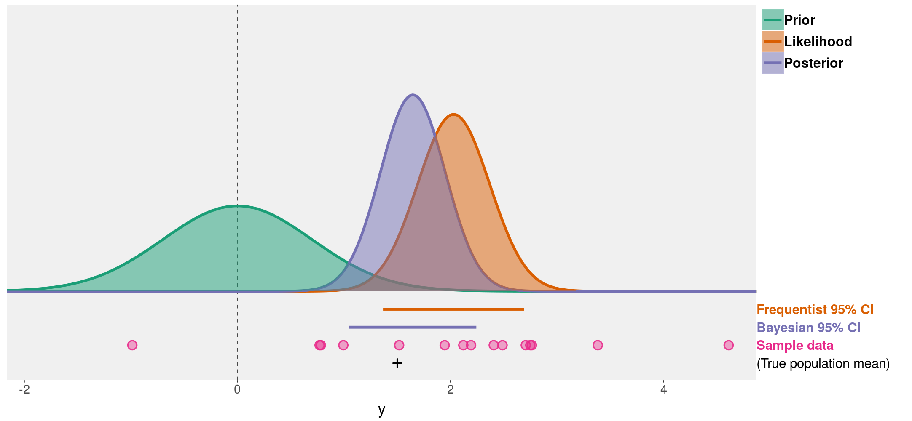

我們與「顯著」的距離 ~ p值是判斷科學研究成敗的過時指標嗎？
統計檢定是不是顯著，或者p值是不是小到可以接受的水準，是多數自然科學與社會科學的學術工作者們，分析資料判斷能否更新知識的工具。也是開發機器學習模型的數據分析人員，用來判斷收集到的資料能不能支持想驗證的假設之常見指標。自從重要奠基者Roland Fisher，Jerzy Neyman，與Egon Pearson分別發表p值以及推論犯錯率的重要概念與數學推導12，二次世界大戰後許多科學研究者，習慣用少於.05的p值推論獲得或發現預期的結果。統計推論的使用策略發展到二十一世紀的前十年，每個運用統計的科學領域已經累積不少批判與反省統計推論與p值的意見。2005年統計學者John Ioannidis發表批判生物醫學領域充斥偽陽性結果的經典論文3，到2010年起心理學界密集爆發學術不端事件，以及高影響力期刊接受無法再現的爭議研究事件4，讓科學家誤用p值的問題浮現。除了各領域學者集結推出各種改良方案與行動56，2016年美國統計學會(ASA)理事會發表聲明7，提出六點建議給需要運用統計推論做出結論的科學家們，如何正確使用與解讀p值。
ASA的建議公開的時候，台灣也有不少學者關注後續的影響。美國德州大學奧斯汀分校的林澤民教授於個人部落格分享當時的在台演講「p值的陷阱」8，獲得華文知識圈廣大迴響。到了2019年三月，2016年代表ASA撰寫聲明的Ronald Wasserstein，將2016年參與ASA主辦的主題研討會學者發表的評論與建議，一共43篇論文集結於ASA專刊9。參與其中兩篇專文的三位學者Valentin Amrhein，Sander Greenland，與Blake McShane，於專刊發表同日，在自然期刊發表主張，響應ASA的專刊主題10。三位作者提到完成這份主張的初稿時，曾將預印本公佈於網路並收集連署，一星期內就獲得來自800多位統計學及自然與社會科學領域的學者響應。因此自然期刊公上網後，也吸引全球各地關心統計推論誤用問題人士的注目。
最初看到Amrhein等人的主張，我就留意過去幾年投入提昇心理學研究品質的學者一面倒地批判他們的建議做法：放棄p值的判斷閾限，提倡運用信賴區間評估實際結果與預期結果的相容性。主要的批判意見是這些學者提出的建議都是指點科學家們要做什麼，或者不要做什麼，而非討論為什麼該這麼做或不該這麼做。我看了幾天各方意見交流，也有自己的看法時，就收到林澤民教授的私訊，詢問有沒有興趣寫篇科普文章，向有興趣的讀者說明這幾年各界批評統計推論濫用的聲浪，帶來什麼訊息。當下我決定做個非正式調查，了解一下林教授「p值的陷阱」發佈三年後，華文圈的統計使用者正確了解p值人們有多少，還有探討誤解存在的原因，非正式的調查結果促成我寫作這篇文章的主要動機。2019年4月1日，我在個人臉書發佈下圖的動態訊息，建議第一次看到這則訊息的朋友，請自己先想想看，以你現在所知選擇你認為正確的答案：

p值是什麼？
回首林教授「p值的陷阱」，林教授的解釋如下：
p值是什麼？我想在座有很多專家比我都懂，但是也有一些同學在場，所以還是稍微解釋一下。p值是由Ronald Fisher在1920年代發展出來的，已將近一百年。p值檢定最開始，是檢定在一個model之下，實驗出來的data跟model到底吻合不吻合。這個被檢定的model，我們把它叫做虛無假設（null hypothesis），一般情況下，這個被檢定的model，是假設實驗並無系統性效應的，即效應是零，或是隨機狀態。在這個虛無假設之下，得到一個統計值，然後要算獲得這麼大(或這麼小)的統計值的機率有多少，這個機率就是p值。
ASA的2016年聲明中，有關p值的解釋也是短短的一句話：
Informally, a p-value is the probability under a specified statistical model that a statistical summary of the data (e.g., the sample mean difference between two compared groups) would be equal to or more extreme than its observed value.
看過以上解釋，有仔細思考的讀者應該會把想選擇的答案縮小到3與4兩個選項。但是不太熟悉機率的讀者應該會困惑，p值是個什麼樣的機率？林教授說的「在這個虛無假設之下，得到一個統計值，然後要算獲得這麼大(或這麼小)的統計值的機率有多少」，以及ASA的解釋“the probability under a specified statistical model that a statistical summary of the data…”。兩種解釋都說明p值是一種條件機率。
借用Deborah Mayo寫的書“Statistical inference as severe testing: how to get beyond the statistics wars”11所記的公式，告訴我們p值是這樣的條件機率：
\[Pr (X \geq x_0 \mid H_0 ) = p(x_0)\]
公式裡的\(H_0\)代表虛無假設的統計模型(statistical model)，\(X\)代表實際資料的隨機變數，\(x_0\)代表虛無假設統計模型的隨機變數，一般來說\(X\)與\(x_0\)分別指實際資料的平均值與統計模型估計的期望值12。\(X\)與\(x_0\)之間的差異越小，表示實際資料越符合虛無假設統計模型，得到的p值會越大，反之實際資料越不符合虛無假設統計模型，p值會越小。實際資料符合虛無假設統計模型的機率越小，表示實際資料有可能符合其他統計模型。虛無假設統計模型通常代表沒有效果的預期結果，所以科學家通常希望得到的p值越小越好。
為何許多人會誤解p值
這次非正式調查列出的選項，最正確的是4，選項5要加上前提「具備高考驗力的條件時」才是正確。但是我發現許多只選一項的網友選擇3，部分網友表示3,4都有可能，這些網友身份從老師到學生都有，公佈答案時沒有人只選擇4。選項3所指是另一種條件機率：
\[Pr( H_0 \mid X \geq x_0) = p(H_0)\]
這種條件機率的白話解釋是「當得到一個統計值，虛無假設統計模型存在的機率」，這種條件機率又被稱為事後機率(posterior probability)，了解貝氏定理可知事後機率通常無法直接估計，但可運用已知的事前機率(prior probability)與似然性(likelihood)逼近之。p值就是似然性的一種估計方法。
中英文文法與數學公式文法有許多相反的地方，其中之一就是像林教授及ASA的白話解釋用「之下」與“under”描述虛無假設前提。不熟悉條件機率的讀者很容易以為\(H_0\)是資料抽樣分佈的期望值，更別說對機率一知半解，卻常常要分析資料的科學家們。科學家以錯誤的理解使用統計推論，長年累月延續加上世代傳承，當然會產生許多不良研究結果，以及有損學術倫理的研究操作習慣。
過嚴的判斷門檻
除了許多人會誤解p值的真面目，更多被批判的誤用是將p值用於二分判斷，也就是以統計顯著與否推測有沒有發現預期的結果。前述的公式解說告訴我們p值是顯示實際資料與預期的統計模型之間的差異程度，是高是低應該視研究問題的性質而定。學過統計的朋友都聽過的.05就是一種最多科學領域依賴的判斷門檻。
然而設定判斷門檻這種作為，其實已經有違科學研究的共同宗旨：揭露不確定現象背後的規律。當一項研究主題僅憑幾次結果的p值未達門檻，就當是沒有價值的研究主題，有可能造成低估的錯誤。Amrhein等三位學者在自然期刊評論特別批判這種狀況，他們的舉例說明這個主題的所有結果若是都顯示一致的平均值，只以幾個p值沒有達到門檻，就決定放棄研究這個主題，長遠影響是有潛力的科學題目將無法開花結果。
過鬆的判斷門檻
相對於被低估的研究結果，另一個被批判的誤用是高估研究結果的真實性。這種誤用通常出現於p值僅剛好通過門檻，而且受人注目的原創研究。例如以「權力姿勢效應」而聲名大噪的社會心理學者Amy Cuddy，研究發表後由她本人與追隨者宣傳的其中一種效應，擺出擴張型姿勢會提高冒險動機的測量指標，在2010年發表的報告裡，實際的p值是0.04913。由於當時期刊並不要求寫出詳細的p值，報告只寫p < .05。若非之後其他學者的批評與無法再現的實驗結果，Amy Cuddy到現在可能還是將這項指標列為理論要素。
過去許多心理學研究以剛好通過門檻的研究結果當成支持理論的證據，累積許多難以再現的研究，對於歐美心理學界來說，再現危機是2010年代心理學的時代特徵。為了扭轉因高估p值所帶來的惡果，有學者提出偵測異常p值報告的方法14，也有許多領域的學者串聯倡議提高判斷門檻15。
如何表達不確定性？
相對於提高判斷門檻的倡議，還有兩種相反的意見與措施，提供科學家改善使用統計的做法。第一種是由專業學術期刊主動出手，要求投稿學者不得在報告裡使用p值或統計顯著與否呈現研究結果，例如社會心理學的Basic and Applied Social Psychology、政治學的Political Analysis。第二種是Amrhein等三位學者在自然期刊評論主張，以改名為「可容性區間」(compatibility interval)16的信賴區間取代p值及顯著性等二分判斷相關詞彙。參與這次ASA專刊的許多學者也是這類主張提倡者，例如心理學界的Calin-Jageman 與 Cumming17。
至此提到的三種做法，提倡者的目的都是減少科學家過度肯定研究結果，降低無法再現的劣質研究充斥科學文獻的比例。但是用信賴區間取代p值的判斷門檻是好方法嗎？
在此借用密西根大學資訊科學系教授Matthew Kay公開演講簡報資料解說信賴區間是什麼18。這一段之後的示意圖是簡報圖片的重製，呈現事前機率(Prior)、似然性(Likelihood)、以及事後機率(Posterior)三種機率函數在資料空間的存在。其中似然性的機率函數相當於假設檢定之中的對立假設統計模型(H1)，事前機率的期望值等於虛無假設統計模型的預測。兩個統計模型差異越大，得到的p值越小，信賴區間(confidence interval，圖中橘色線條)也越不可能覆蓋虛無假設的期望值。

上圖也呈現事後機率函數以及確信區間(credibility interval，圖中紫色線條)，可見兩種區間是不同的估計結果。稍早提到事後機率是根據實際資料，統計模型確實存在的條件機率，所以確信區間比信賴區間更適合判斷實際資料相容理論預測的程度。然而許多情況缺乏事前機率的資訊，研究人員只能估計信賴區間。如果讀者想要更了解三種機率函數與兩種區間的差別，可以點擊此段附註提供的連結19，運用我製作的中文版shiny互動網頁探索。
步步為營正確使用統計方法
如果讀者讀完這篇文章，準備要做統計分析寫報告，開始擔心自己是不是用錯誤的觀念與方法操作統計工具，那麼這篇文章就起了作用。這裡談到兩種有損科學研究品質的誤用狀況，以及三種改進的主張：提高判斷門檻；放棄p值；用信賴區間取代判斷門檻。就像統計推論的誤用者以過度簡化的二分門檻對待有連續性資訊的p值一樣，這些主張是以過度簡化的思維，以及缺乏考慮各領域科學研究複雜度所得到的結論。這些主張的提倡者都過度相信只要更換判斷標準或方法，科學家與統計使用者就不會犯相同的錯誤。
我在2017年曾參與荷蘭心理學者Daniel Lakens發起的集體寫作，回應提高判斷門檻的主張，並提出改進科學家設定統計方法的構想20。參與寫作的Stephen Benning在評論出版後，於個人部落格詳述實踐我們主張的具體作法21。作法是在研究開始之前，做好六道準備：(1)想清楚這次研究需不需要判斷門檻；(2)確定研究目標的性質(Benning列出四種範例)；(3)找出研究目標的最小效果量(minimal/smallest effect size of interest)；(4)設定最適判斷門檻；(5)設定最適考驗力；(6)如果有多重比較，慎選判斷策略。
六道準備步驟對於許多從事研究的讀者來說，最難的應該是找出最小效果量。關於此點，Lakens與他的博士生正在開發工具與教學材料，提供各領域的科學家運用2223。我們相信以妥善的統計規劃完成的研究，不論研究報告有沒有出現p值，有沒有表達顯著與否，都能讓讀者掌握研究結論的確定與不確定訊息。
推薦閱讀
Daniel Laken24提供如何改良統計與研究方法教育的建議，回應ASA專刊的主軸，有興趣知道如何改良統計教育的朋友可找來一讀。Deborah Mayo耕耘統計哲學研究數十年，近期著作25爬梳現代科學家誤用統計推論的歷史脈絡，ASA專刊主編Ronald Wasserstein也在序文首段推薦，想深入探討誤解與誤用問題由來的讀者，可以找來詳讀。
本文原刊於舊站，2026-10 自網站備份復原。
腳註
Fisher, R. A. (1934). Statistical Methods for Research Workers. Edinburgh: Oliver and Boyd. (First published in 1925.)↩︎
Neyman, J., & Pearson, E. S. (1933). On the Problem of the Most Efficient Tests of Statistical Hypotheses. Philosophical Transactions of the Royal Society of London. Series A, Containing Papers of a Mathematical or Physical Character, 231, 289–337. Retrieved from JSTOR.↩︎
Ioannidis, J. P. A. (2005). Why Most Published Research Findings Are False. PLOS Med, 2(8), e124. https://doi.org/10.1371/journal.pmed.0020124↩︎
Chambers, C. (2017). The Seven Deadly Sins of Psychology: A Manifesto for Reforming the Culture of Scientific Practice. Princeton, NJ: Princeton University Press.↩︎
Simmons, J. P., & Simonsohn, U. (2017). Power Posing: P-Curving the Evidence. Psychological Science, 28(5), 687–693. doi: 10.1177/0956797616658563↩︎
Benjamin, D. J., Berger, J. O., Johannesson, M., Nosek, B. A., Wagenmakers, E.-J., Berk, R., … Johnson, V. E. (2017). Redefine statistical significance. Nature Human Behaviour, 1. doi: 10.1038/s41562-017-0189-z↩︎
Wasserstein, R. L., & Lazar, N. A. (2016). The ASA’s Statement on p-Values: Context, Process, and Purpose. The American Statistician, 70(2), 129–133. https://doi.org/10.1080/00031305.2016.1154108↩︎
Wasserstein, R. L., Schirm, A. L., & Lazar, N. A. (2019). Moving to a World Beyond “p < 0.05.” The American Statistician, 73(sup1), 1–19. https://doi.org/10.1080/00031305.2019.1583913↩︎
Amrhein, V., Greenland, S., & McShane, B. (2019). Scientists rise up against statistical significance. Nature, 567(7748), 305–307. https://doi.org/10.1038/d41586-019-00857-9↩︎
Mayo, D. G. (2018). Statistical inference as severe testing: how to get beyond the statistics wars. Retrieved from https://doi.org/10.1017/9781107286184↩︎
本文的p值與事後機率之條件機率公式為方便解說的簡化版，Fisher所提出的完整公式請Mayo (2018)之單元3.2。↩︎
Carney, D. R., Cuddy, A. J. C., & Yap, A. J. (2010). Power Posing: Brief Nonverbal Displays Affect Neuroendocrine Levels and Risk Tolerance. Psychological Science, 21(10), 1363–1368. doi: 10.1177/0956797610383437↩︎
Simmons, J. P., & Simonsohn, U. (2017). Power Posing: P-Curving the Evidence. Psychological Science, 28(5), 687–693. doi: 10.1177/0956797616658563↩︎
Benjamin, D. J., Berger, J. O., Johannesson, M., Nosek, B. A., Wagenmakers, E.-J., Berk, R., … Johnson, V. E. (2017). Redefine statistical significance. Nature Human Behaviour, 1. doi: 10.1038/s41562-017-0189-z↩︎
「可容性區間」的中文翻譯，感謝國立中正大學哲學系陳瑞麟教授建議。↩︎
Calin-Jageman, R. J., & Cumming, G. (2019). The New Statistics for Better Science: Ask How Much, How Uncertain, and What Else Is Known. The American Statistician, 73(sup1), 271–280. https://doi.org/10.1080/00031305.2018.1518266↩︎
http://www.mjskay.com/presentations/openvisconf2018-bayes-uncertainty-2.pdf↩︎
Lakens, D., Adolfi, F. G., Albers, C. J., Anvari, F., Apps, M. A. J., Argamon, S. E., … Zwaan, R. A. (2018). Justify your alpha. Nature Human Behaviour, 2(3), 168–171. https://doi.org/10.1038/s41562-018-0311-x↩︎
Benning, S. D. (2018, March 1). How to justify your alpha: step by step – Stephen D. Benning. Retrieved March 1, 2018, from https://sbenning.faculty.unlv.edu/2018/03/01/how-to-justify-your-alpha-step-by-step/↩︎
Lakens, D., Scheel, A. M., & Isager, P. M. (2018). Equivalence Testing for Psychological Research: A Tutorial. Advances in Methods and Practices in Psychological Science, 1(2), 259–269. https://doi.org/10.1177/2515245918770963↩︎
Anvari, F., & Lakens, D. (n.d.). Using Anchor-Based Methods to Determine the Smallest Effect Size of Interest. https://doi.org/10.31234/osf.io/syp5a↩︎
Lakens, D. (2019). The practical alternative to the p-value is the correctly used p-value [Preprint]. doi: 10.31234/osf.io/shm8v↩︎
Mayo, D. G. (2018). Statistical inference as severe testing: how to get beyond the statistics wars. Retrieved from https://doi.org/10.1017/9781107286184↩︎